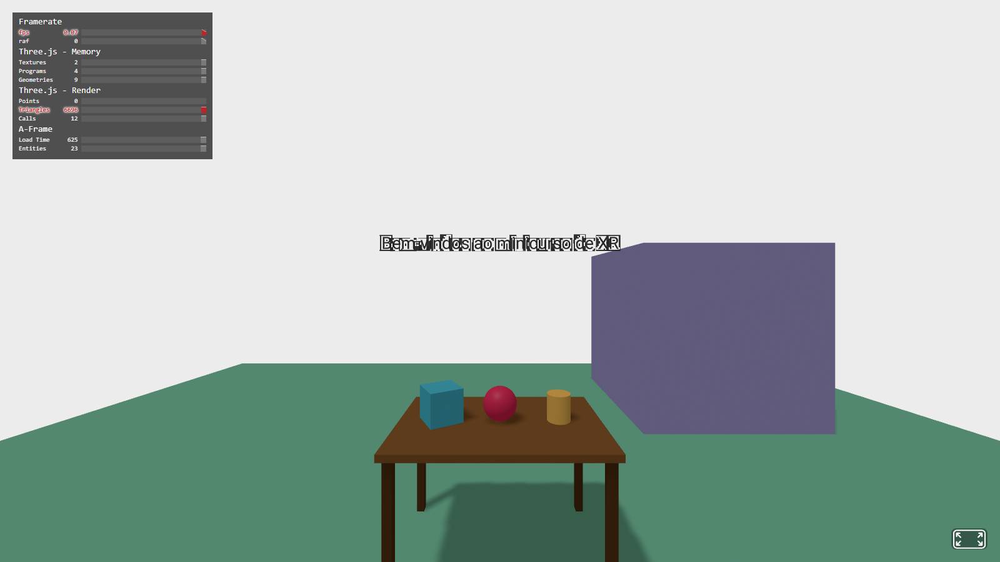
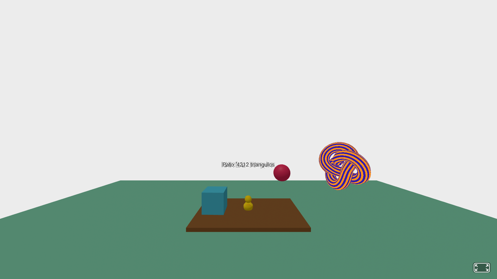
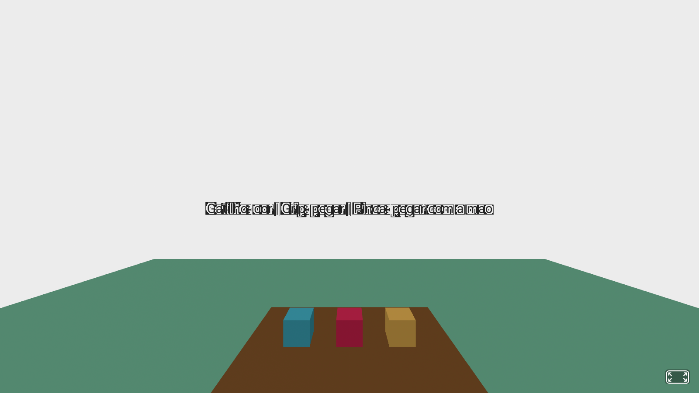
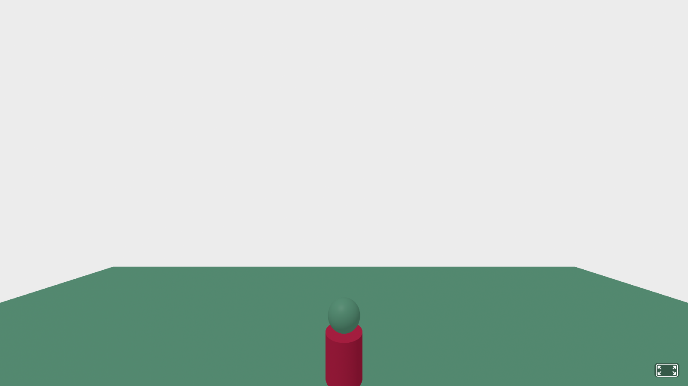

Minicurso · Estágio Docência em Computação Gráfica
Do pipeline gráfico ao headset, em 4 horas
Lilian Giselly Pereira Santos · UFAL · Instituto de Computação
Roteiro
Aula 1 · hoje · 2h
Primeira cena, no navegador
Aula 2 · próxima semana · 2h
Código próprio, interação e, no fim, o Quest
Prática: um arquivo .html aberto no navegador
Minicurso XR com A-Frame
Aula 1 · 2h
O que muda quando o usuário está dentro da cena
O espectro
Virtual por cima do real
Filtros de câmera
Virtual que entende o espaço
Vaso sobre a mesa real
Ambiente todo sintético
Simuladores, jogos
Minicurso XR com A-Frame · Aula 1
Dois conceitos que se confundem
Campo de visão, resolução, FPS, rastreamento
Objetiva
A sensação de “estar lá”
Subjetiva
Minicurso XR com A-Frame · Aula 1
Rastreamento
3DoF
Só rotação
6DoF
Rotação + translação
Inside-out: câmeras no headset. Controles e mãos.
Minicurso XR com A-Frame · Aula 1
Estereoscopia
Uma imagem por olho
Pipeline 2× por quadro
IPD: distância entre pupilas
FOV: campo de visão
Minicurso XR com A-Frame · Aula 1
Orçamento de tempo
13,9 ms
por quadro a 72 Hz
11,1 ms
por quadro a 90 Hz
8,3 ms
por quadro a 120 Hz
Minicurso XR com A-Frame · Aula 1
A pilha
A-Frame
Tags HTML e componentes
three.js
Grafo de cena, malhas, materiais
WebGL
Pipeline gráfico na GPU
WebXR
Pose, controles, mãos, VR e AR
No Quest: só abrir um link HTTPS
Minicurso XR com A-Frame · Aula 1
Primeira página
<script src="aframe.min.js"></script>
<a-scene>
<a-box position="0 1 -2" color="#4CC3D9"></a-box>
<a-sphere position="1 1.2 -3" radius="0.5"></a-sphere>
<a-plane rotation="-90 0 0" width="10" height="10"></a-plane>
<a-sky color="#ECECEC"></a-sky>
</a-scene>
a-scene: câmera, luz e botão VR prontos
position: metros
rotation: graus
Ctrl + Alt + I: inspetor
Minicurso XR com A-Frame · Aula 1
A regra de ouro
Mesa de 3 m no headset parece um prédio
Prática · 50 min
cena.html · editor + navegador
Parece real? Objetos apoiados ou flutuando?
Onde chegar: modulo1/solucao.html
Minicurso XR com A-Frame · Aula 1
Aula 2 · 2h
Código próprio, laser, mãos e locomoção
Entidade-componente-sistema
Contêiner vazio no grafo de cena
Dados + comportamento, como atributo HTML
Lógica global por tipo de componente
<a-entity
geometry="primitive: box"
material="color: #4CC3D9"
girar="velocidade: 90"></a-entity>
Minicurso XR com A-Frame · Aula 2
Anatomia de um componente
AFRAME.registerComponent('girar', {
schema: {
velocidade: { default: 45 } // graus/s
},
init: function () {
// roda uma vez, ao anexar
},
tick: function (t, dt) {
var rad = THREE.MathUtils.degToRad(
this.data.velocidade);
this.el.object3D.rotation.y += rad * dt / 1000;
}
});
schema: dados do HTML
init: uma vez
tick: todo quadro, com dt
object3D: objeto do three.js
Minicurso XR com A-Frame · Aula 2
Pergunta
72 °/s
no Quest a 72 Hz
120 °/s
no mesmo Quest a 120 Hz
Minicurso XR com A-Frame · Aula 2
Ponte com a disciplina
| A-Frame | three.js / CG |
|---|---|
| a-entity | Object3D (nó do grafo de cena) |
| geometry | BufferGeometry (vértices) |
| material | MeshStandardMaterial (PBR) |
| position, rotation, scale | Matriz de modelo local |
| Entidade dentro de entidade | Hierarquia de transformações |
HTML rotation: graus
object3D.rotation: radianos
90 rad ≈ 14 voltas
Minicurso XR com A-Frame · Aula 2
Hierarquia de transformações
<a-entity id="mesa"
position="0 0 -0.5">
<a-box ... >
<a-sphere ... >
<a-cylinder ... >
</a-entity>
Filho = matriz do pai × matriz local
Minicurso XR com A-Frame · Aula 2
Modelos 3D
<a-asset-item id="pato"
src="Duck.glb"></a-asset-item>
<a-entity gltf-model="#pato"
scale="0.1 0.1 0.1"></a-entity>
4.212
triângulos no pato, desenhados 2× por quadro

modulo2/solucao.html · confira a escala em metros
Minicurso XR com A-Frame · Aula 2
Exercício · 45 min
modulo2/exercicio.html
Shader próprio
Contar triângulos do pato
Minicurso XR com A-Frame · Aula 2
Apontar
mouseenter / mouseleave
click: gatilho, pinça, mouse
objects: .interativo
Minicurso XR com A-Frame · Aula 2
Metáforas de interação
Laser + grip: alcança longe, sem sair do lugar
agarrar-laser
Mão + pinça: intuitivo, até onde o braço alcança
hand-tracking-grab-controls
Nas duas: feedback imediato ao apontar
Minicurso XR com A-Frame · Aula 2
Mapa de entradas
| Entrada | Evento do A-Frame | Uso neste curso |
|---|---|---|
| Gatilho | triggerdown, click | Trocar cor, teletransporte |
| Grip (lateral) | gripdown, gripup | Pegar com o laser |
| Analógico esquerdo | thumbstickmoved | Movimento contínuo |
| Analógico direito | thumbstickmoved | Giro em passos de 30° |
| Pinça (mão) | pinchstarted, pinchended | Pegar com a mão |
No init: this.el.addEventListener('gripdown', …)
Minicurso XR com A-Frame · Aula 2
Exercício · 25 min
modulo3/interacao-exercicio.html
No headset: laser, depois a mão. Mais natural? Mais preciso?

Onde chegar: modulo3/interacao-solucao.html
Minicurso XR com A-Frame · Aula 2
Cybersickness
Conflito visual-vestibular: principal causa de enjoo
Locomoção, vista de cima
Minicurso XR com A-Frame · Aula 2
Locomoção
| Técnica | Como funciona | Conforto | Presença |
|---|---|---|---|
| Andar de verdade | Dentro do limite da sala | Alto | Alta |
| Teletransporte | Aponta e aparece | Alto | Média |
| Giro em passos | Saltos de 30° | Alto | Média |
| Movimento contínuo | Analógico, deslize suave | Baixo | Alta |
Prontos em js/componentes.js
Minicurso XR com A-Frame · Aula 2
Realidade mista no Quest 3S

modulo3/realidade-mista.html · botão AR
Câmeras mostram a sala
Raio contra superfícies reais
Luz e oclusão não batem
Minicurso XR com A-Frame · Aula 2
Para continuar
Leituras
Tori e Hounsell (org.), Introdução a Realidade Virtual e Aumentada, SBC, 2020
Jerald, The VR Book, ACM Books, 2015
LaValle, Virtual Reality, Cambridge, 2023
Documentação
aframe.io/docs
threejs.org/docs
w3.org/TR/webxr